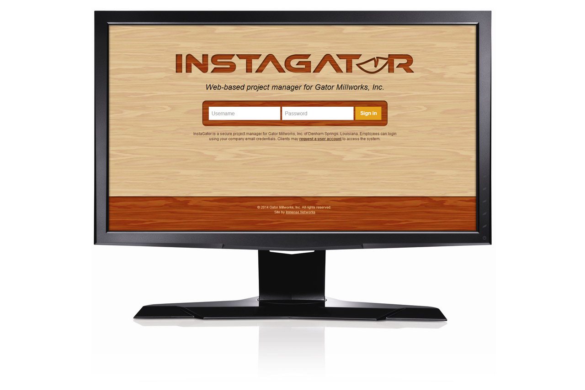
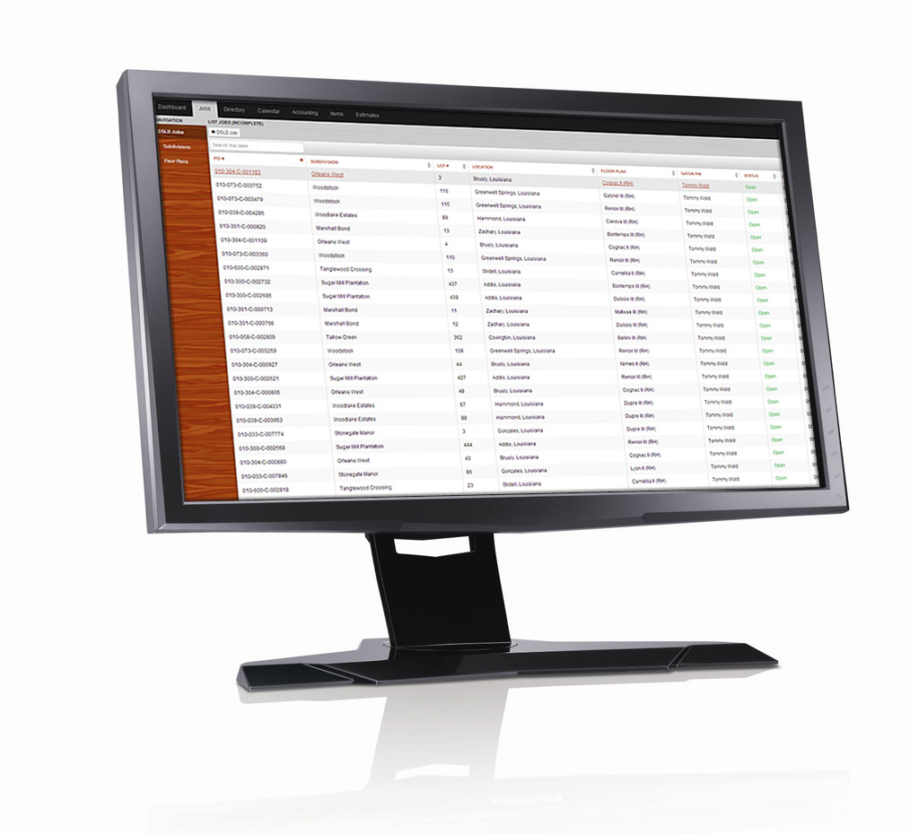
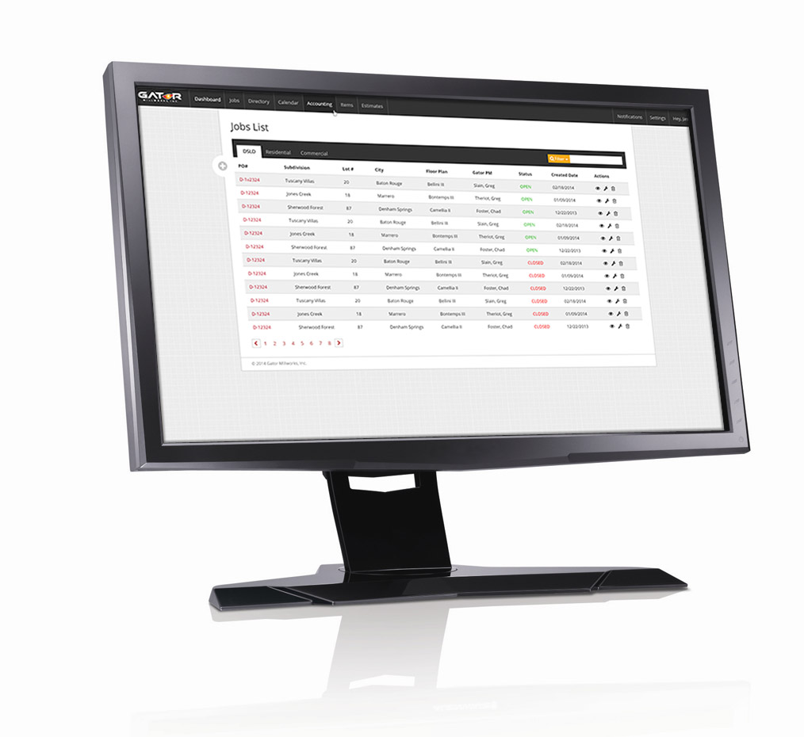

<!DOCTYPE html><html><head><meta charset=UTF-8 /><meta content="IE=edge,chrome=1" http-equiv=X-UA-Compatible /><meta content="width=device-width" name=viewport /><script>var host = "hellojason.net";
if ((host == window.location.host) && (window.location.protocol != "https:"))
  window.location.protocol = "https";</script><meta content="index,follow" name=robots /><link href="../../apple-touch-icon.png?v=Gvm449pRYq" rel=apple-touch-icon sizes=180x180 /><link href="../../favicon-32x32.png?v=Gvm449pRYq" rel=icon sizes=32x32 type="image/png"/><link href="../../favicon-16x16.png?v=Gvm449pRYq" rel=icon sizes=16x16 type="image/png"/><link href="/site.webmanifest?v=Gvm449pRYq" rel=manifest /><link color="#a432f4" href="../../safari-pinned-tab.svg?v=Gvm449pRYq" rel=mask-icon /><link href="../../favicon.ico?v=Gvm449pRYq" rel="shortcut icon"/><meta content="#a432f4" name=msapplication-TileColor /><meta content="#ffffff" name=theme-color /> <title>Hello Jason / Gator Millworks Gatortrax</title><meta content="Web application to manage millwork projects from initial bid to delivery." name=description /><link href="../../assets/stylesheets/site-fa3f21a6.css" rel=stylesheet /><link href="https://hellojason.net//projects/gatortrax/" rel=canonical /><script>(function(i,s,o,g,r,a,m){i['GoogleAnalyticsObject']=r;i[r]=i[r]||function(){
(i[r].q=i[r].q||[]).push(arguments)},i[r].l=1*new Date();a=s.createElement(o),
m=s.getElementsByTagName(o)[0];a.async=1;a.src=g;m.parentNode.insertBefore(a,m)
})(window,document,'script','//www.google-analytics.com/analytics.js','ga');

ga('create', 'UA-48926813-1', 'auto');
ga('send', 'pageview');
ga('set', 'anonymizeIp', true);</script></head><body class="projects projects_gatortrax projects_gatortrax_index"></body><header class=banner role=banner><div id=primary-navigation role=navigation><div class=navbar-header><a class=logo href="/" title="Hello Jason Portfolio"><svg id=hellojason-logo xmlns="http://www.w3.org/2000/svg" width="0.56in" height="0.56in" viewBox="0 0 40.6 40.6"><defs><style>.cls-1{fill:#fbac2d;}</style></defs><title>hello-jason-logo</title><path class=cls-1 d="M9.3,13.1a4.11,4.11,0,0,1,2.8-.7H29.9a4.42,4.42,0,0,1,2.9.7,3.39,3.39,0,0,1,.8,2.5v0.5H28.4A1.43,1.43,0,0,0,27,17.5v0.9q3.75,0,4.8.9c0.7,0.6.9,2.9,0.9,2.9a28.1,28.1,0,0,1,.1,2.9V29a1.43,1.43,0,0,1-1.4,1.4h-8A1.43,1.43,0,0,1,22,29V28.1c0-1.9.2-3.1,0.7-3.6a3.37,3.37,0,0,1,1.7-.6,1.42,1.42,0,0,0,1.4-1.2,1.33,1.33,0,0,0-1.4-1.1H16.9A1.43,1.43,0,0,0,15.5,23v0.7c1.6,0,2.7.2,3.2,0.7a5.14,5.14,0,0,1,.6,2.3,23.48,23.48,0,0,1,.1,2.6A1.33,1.33,0,0,1,18,30.4H11A1.43,1.43,0,0,1,9.6,29V23.5c0-2.2.3-3.5,0.8-4.1a4.15,4.15,0,0,1,1.8-.7,15.26,15.26,0,0,1,1.8-.1,1.23,1.23,0,0,0,.4-1.2A1.33,1.33,0,0,0,13,16.2H8.5V15.5a2.92,2.92,0,0,1,.8-2.4" transform="translate(-0.7 -0.7)"/><path class=cls-1 d="M21,3.4A17.6,17.6,0,1,1,3.4,21,17.63,17.63,0,0,1,21,3.4m0-2.7A20.3,20.3,0,1,0,41.3,21,20.31,20.31,0,0,0,21,.7h0Z" transform="translate(-0.7 -0.7)"/></svg><span class=tagline>Hello, I'm Jason.</span></a></div><div id=primary-container><ul class=nav><li class=nav-item-blog><a href='/'>Blog</a></li><li class=nav-item-projects><a href='/projects/'>Projects</a></li><li class=nav-item-about><a href='/about/'>About</a></li></ul></div></div><div class=container><h1 class=title>Gator Millworks Gatortrax</h1></div><svg class=icon-arrow-downright xmlns="http://www.w3.org/2000/svg" width="8.4" height="8.5" viewBox="0 0 8.4 8.5"><title>icon-arrow-downright</title><path d="M2.3,8.5,0,6.1H4.5L0,1.6,1.6,0,6.1,4.5V0L8.4,2.3V8.5Z"/></svg></header></html><main class=container role=main><section id=project-single><aside><dl><dt>Project</dt><dd>Gator Millworks Gatortrax</dd><dt>Year</dt><dd>2013</dd><dt>Software</dt><dd>Ruby on Rails</dd><dt>Roles</dt><dd>Designer, Frontend developer, Project manager</dd></dl><hr></hr><p>Gatortrax, or Instagator, is a web-based project manager for Gator Millworks in Denham Springs. This Ruby on Rails application allows employees to create estimates, convert them to jobs, and schedule job-related tasks. It also assists with stock and organization of products and materials in inventory.</p> <p>The original Gtrax acted as an exploratory prototype to solidify functionality and workflows. It is undergoing an overhaul of its user interface that is more fully realized and useful for the client.</p> </aside><main role=main>  <noscript></noscript><hr/>  <noscript></noscript><hr/>  <noscript></noscript></main></section></main><footer id=footer></footer><script src="//assets.codepen.io/assets/embed/ei.js" async=true></script>